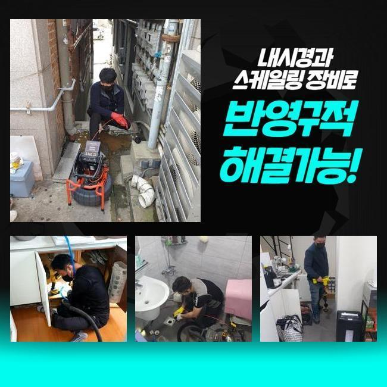
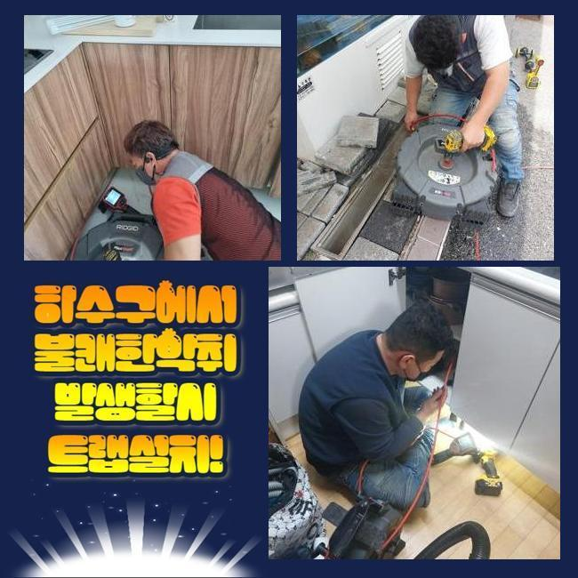
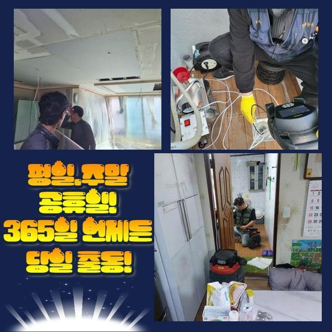
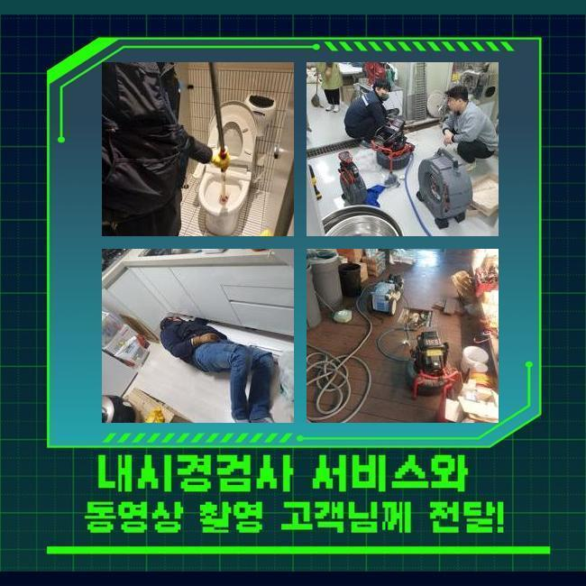
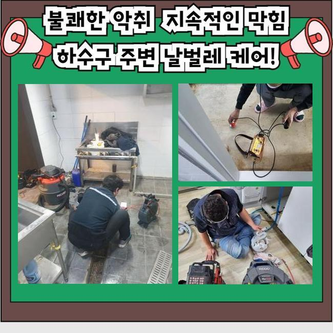
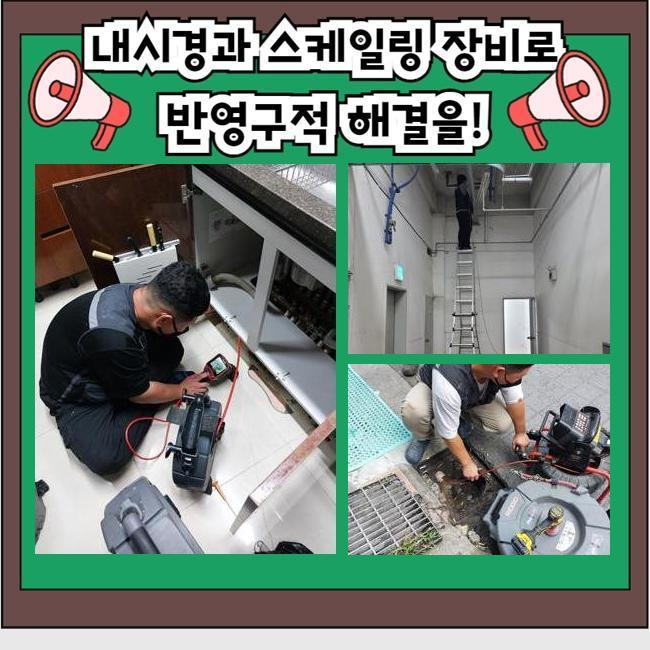
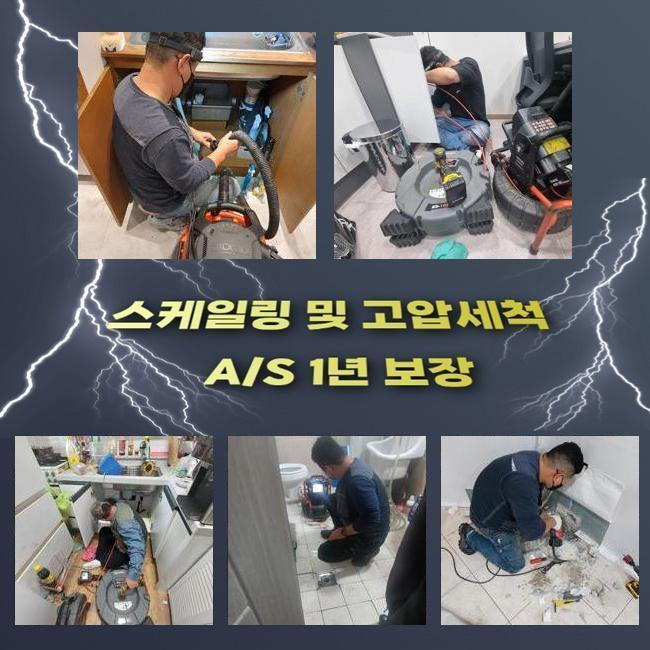

🏠 성북구 종암동화장실뚫음 석관동 배관뚫기 누수탐지공사
용인 싱크대막힘 전문 시공 후기

📋 작업 개요
- 위치: 용인
- 서비스 유형: 싱크대막힘, 변기막힘, 하수구막힘, 배관막힘, 누수수리, 역류해결, 뚫는업체, 배관청소, 고압세척, 설비공사, 악취차단
- 작업 일시: 2025. 4. 16. 10:29
- 업체명: 하수구수사대 (010-5615-2118)
🔍 문제 상황
성북구 종암동화장실뚫음 석관동 배관뚫기 누수탐지공사
하수구 물이 정상 배출이 안되면 일상 속의 고난을 체감하게 됩니다
여러 세대가 사는 건물 안의 한 집 안의 싱크대가 틀어막혀버려서 계속 물이 차오르는 케이스도 다수이며 화장실 안의 양변기나 세탁공간에 물이 차올라서 이용에 제약이 도래할 수 있는 부분입니다
공동주택 거주민분으로부터 방문해달라는 연락을 받으면 세대 내의 문제라고 보고 집 안쪽에서 장비들을 돌려서 해소합니다
공용으로 쓰는 메인관로는 아파트 건물이라면 정해둔 시기마다 정례적으로 관로 세척을 하기에 고장이 나는 일은 비교적 흔치 않아요
반대로 상가빌딩은 하수관의 곤란이 일어날 가능성이 상대적으로 대체로 높거든요
오늘 소개할 곳은 상가건물 내에 깔린 주 하수관이 막혀 영업공간 안에 설치된 각각의 배수마저 힘들어져서 제일 빠르게 와달라고 방문해 주시게 된겁니다
현장 조사에 돌입해보니 문제가 됐다고 보이는 메인 배수로가 있는 장소가 파악돼서 진행을 시작했습니다
이 설비에 장애가 생기면 가정집 안에 있는 세대 배관을 원인으로 단정 짓기는 어려우며 대형 배관 속에서 변형이나 마모가 생겼거나 이물질이 한껏 침투해서 배수 시스템에 문제가 나타났을 가능성이 농후합니다

🔎 원인 분석
💡 전문가 진단: 정밀 진단 장비를 사용하여 슬러지의 고착 여부를 판명하고 타격/세척 작업을 실시했습니다.
큰 흐름을 관장하는 배수로부터 뚫기 시작하여 다음은 미세한 파이프라인까지 세척합니다
천장 속에 설치된 배관 통로였기에 사다리를 타고 올라가서 수리를 해주기로 해서 막혀있는 하수구의 해결책이 될 장비를 구상하여 가져갔습니다
가까운 곳을 정리해도 심층부 영역까지는 수습이 되지 못했으니 메인배관을 수리할 시 해당 파이프의 곳곳을 속시원히 정화해야 합니다
소재구를 직접 찾아서 충분한 여유공간을 확보하여 작업을 할 수 있는 작업 환경을 만듭니다
내시경 기기라는 카메라로 어두워서 잘 보이지 않는 내부 실황을 봐주기로 했습니다
어디까지 더러워진 것인지 특정 구간에 막혀있을 그 존재에 대해서 기기부터 들이대기 전에 알아내야 작업 방향을 설정할 수 있게 됩니다
메인 배관 상의 문제는 파이프의 사이즈가 폭 넓은 형태라서 일반 주택 현장에 내방할 때 가져가는 석션장비를 돌려서는 나아질 수 없어요
호스 길이가 아래쪽까지 진입하지 못해서 찌꺼기를 모으기엔 집수통이 모자라요
기름 물질을 잘게 분해해서 스케일링하는 기능을 담당해주는 샤프트기 단시간만에 완료되지 않으며 구멍도 많이 뚫어야 해서 곤란할 것 같았어요

🔧 작업 과정
상가 속에 있는 하수구 통수가 되지 못하면 얼른 물길을 내서 설비를 원래대로 고쳐야 합니다
넓은 곳에는 고압수를 통해 접착성 좋은 이물질들이 속시원히 없어질 수 있게 청소하여 파이프 내부를 장애물 없는 환경으로 만들어야 근원적인 문제들을 극복할 수 있게 돼요
이물들이 빼곡하게 찬 상태라면 말끔한 청소작업이 아무래도 곤란을 빚을 수 있으니 먼저 긴 몸체의 스프링기로 제일 꽉 찬 구역을 반복적으로 청소해서 통수가 되게끔 해주고 완성도 높은 수로 정비를 나아가기로 했습니다
본장비를 도달시키기 위해 기름때가 차오른 곳에 접근성을 향상시키는 작업공간을 창출할 수 있었습니다
이번에 담당한 현장은 여러 개의 식품 영업장들이 성업 중인 상태였으며 조리 도중 나온 기름기가 다수 물과 함께 방출되다보니 배수관 속에 기름막이 덕지덕지 붙어있었습니다
기름막은 뜨거운 물을 써도 해체되기 힘들기 때문에 쌓인지 오래될수록 석회물질로 변해서 돌덩이처럼 견고한 장애물이 되고 맙니다
무른 성질을 띠고 있을 때 청소 시공을 수행하지 않고 나몰라라 한다면 입구 부근에서부터 점점 사세를 넓혀서 이동이 불가하도록 꽉 메워져서 물의 흐름이 영영 이뤄지지 않게 되어버려요
유분층을 형성하는 슬러지를 속시원하게 제거하기 위한 루트는 고압세척기기이며 분사력 덕분에 이번에도 순조롭게 더러워진 하수 배관을 세정해 드릴 수 있었습니다
거의 흡착된 듯 붙어있던 것들이 물대포의 영향으로 사라져가는 양상을 배관 내시경을 돌려서 검사하면서 진행해나갔어요
움직임이 전혀 없었던 대규모의 집합물질이 서서히 삭제되어갔고 소규모 크기의 입자만 부유하고 있었습니다
고압세척의 경우에는 현장마다 차이는 있겠지만 찌꺼기가 말라붙은 곳들을 전체적으로 정돈해주어야 막힘 사고나 역류와 같은 일들이 차단됩니다
변성까지 이뤄진 기름기를 고압세척 작업으로 처리하고 아까 썼던 내시경으로 구석구석을 체크하면서 나아졌는지 조명해보았습니다
초반에 하수구를 관측해봤을 때는 빽빽하게 들이찼다 싶을만큼 지저분했던 설비시설이었으나 여러 장비를 활용한 작업을 거치고나니 모든 유해요소가 사라진 쾌적함을 느낄 수 있었습니다
물이 잘 내려가야하니 통수 테스트를 시행해서 물이 걸림없이 나가는 완전히 차원이 달라진 성능을 명백히 짚어본 이후에 작업 끝을 알렸습니다


✅ 작업 완료
중간중간에 작업 도중에 타공해준 홀들은 윗부분을 커버해줄 테이프로 완벽하게 막아서 물샘이 빚어지지 않도록 단도리를 해드렸습니다
올스탑이 되어버린 배수구문제로 많은 곤란함이 있었던 상가 속의 한 곳에서 한자리에 물이 고정된데다 거기다 싱크대 역류까지 도래했던 현장을 정리하고서 작업을 마감할 수 있었습니다!
사이즈가 남다른 배수로라면 혼자 수습하는게 불가능한 사안이므로 경솔하게 스스로 처리해보려 매달리다가는 수도관이 균열이 가거나 부서지는 사례도 종종 발생합니다
가정집도 그렇지만 복잡다단한 상가빌딩이라도 올바른 원인 규명을 통해서 말끔히 손봐드리고 있사오니 걱정하지 않으셔도 됩니다




⚠️ 베란다 누수 및 방수 관리 방법
- ✅ 비가 많이 올 때 창틀 주변이나 아래층 천장에 얼룩이 생기는지 정기적으로 확인해 보세요.
- ✅ 우수관 주변 실리콘 마감이 들뜨거나 깨진 틈새가 있는지 손상 여부를 수시로 체크하세요.
- ✅ 베란다 바닥 타일의 줄눈(메지)이 소실되면 그 틈으로 물이 침투하여 누수가 유발됩니다.
- ✅ 누수 의심 증상 발견 시 방치하면 아래층 손실이 커지므로 즉시 전문가의 진단을 받으십시오.
💡 핵심 정리
- 확실한 장비 작업(내시경 점검 및 샤프트 스케일링)으로 원인을 뿌리 뽑습니다.
- 작업 후 1년 이내에 동일한 부위 재발 시 100% 무상 A/S 서비스를 보장합니다.
- 서울 · 경기 · 인천 전 지역에 24시간 언제든 긴급 출동할 수 있도록 항시 대기 중입니다.
❓ 자주 묻는 질문 (FAQ)
🚨 용인 싱크대막힘 문제로 고민이신가요?
정확한 원인 진단과 확실한 시공으로 재발 없는 해결을 약속드립니다.
24시간 긴급 출동 | 서울 · 경기 · 인천 전지역 | 1년 내 재발 시 무상 A/S